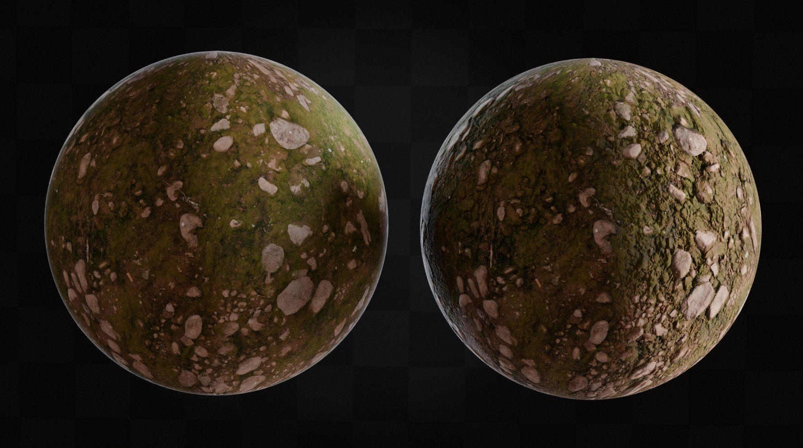

Blender Normal Maps: The Complete Guide to Photorealistic Surface Detail
Normal Maps are arguably the most important texture type in modern 3D rendering, yet they're also the most misunderstood. Look at the dramatic transformation above: both spheres have identical geometry, but the right sphere appears to have thousands of bumps, cracks, and surface details. Although it's not magic, it sure feels like it. This is the power of Normal Maps when properly implemented. In this comprehensive guide, we'll explore everything from the fundamental theory to advanced professional techniques, ensuring you master this essential skill for photorealistic 3D rendering.
1. Understanding Normal Maps: The Science Behind the Magic
What Are Surface Normals?
To understand Normal Maps, we first need to understand surface normals. In 3D graphics, every polygon face has a "normal vector". This can be thought of as an invisible arrow pointing perpendicular to that surface. This normal determines how light interacts with the surface: the angle between the light source and the normal vector determines the brightness of that point.
On a flat surface, all normals point in the same direction, creating uniform lighting. But what if we could trick the renderer into thinking each pixel has a different normal direction? That's exactly what Normal Maps do. They provide per-pixel normal information, creating the illusion of complex surface geometry without adding actual polygons.
The RGB-to-XYZ Translation
Normal Maps store directional information using RGB color channels:
- Red Channel (R): X-axis direction (left-right)
- Green Channel (G): Y-axis direction (up-down)
- Blue Channel (B): Z-axis direction (forward-backward)
The characteristic purple-blue appearance of Normal Maps comes from the fact that most surface details point roughly "outward" from the surface (positive Z), resulting in high blue values. The red and green channels vary to create the subtle directional changes that simulate bumps and indentations.
2. Types of Normal Maps: Tangent Space vs. Object Space
Tangent Space Normal Maps (Most Common)
Tangent Space Normal Maps are by far the most common type you'll encounter. These maps are relative to the surface's local coordinate system, making them incredibly versatile. They can be applied to any object regardless of its orientation in 3D space, and they work correctly even when the object is rotated, scaled, or deformed.
Tangent Space maps have the characteristic purple-blue appearance because they assume the surface is facing "up" in the local coordinate system. Blender's Normal Map node is specifically designed to handle Tangent Space maps, which is why this workflow is so straightforward.
Object Space Normal Maps (Less Common)
Object Space Normal Maps encode normals relative to the object's world coordinates. These maps often appear more colorful (with more varied reds, greens, and blues) because they store absolute directional information. While less flexible than Tangent Space maps, they can be useful for specific applications like character facial animation or when extreme precision is required.
Pro Tip:
Unless you're working with specialized workflows or have specific requirements, stick with Tangent Space Normal Maps. They're more versatile and are what most texture creation tools produce by default.
3. The Critical Color Space Setting: Why "Non-Color" is Essential
This is where most beginners fail, and it's the difference between Normal Maps that work beautifully and those that barely have any effect. When you load any image into Blender, it defaults to the sRGB color space, which applies gamma correction designed for display on monitors. This is perfect for color textures like Albedo maps, but it's disastrous for data textures like Normal Maps.
The Technical Problem
Normal Maps contain mathematical data, not visual color information. When Blender applies sRGB gamma correction to this data, it distorts the precise directional vectors that the Normal Map is trying to communicate. The result is weak, incorrect surface detail that often looks wrong or barely visible.
The Solution: Non-Color Data
Setting the Color Space to "Non-Color" tells Blender to read the image data linearly, without any gamma correction. This preserves the mathematical precision of the normal vectors and ensures the Normal Map functions as intended.
Visual Comparison: sRGB vs. Non-Color
The difference is dramatic. With sRGB color space, your Normal Map might provide only subtle surface variation. With Non-Color, you get the full, intended effect with crisp, convincing surface detail. This is not optional, it's absolutely essential for proper Normal Map functionality.
4. Basic Normal Map Node Setup: Your First Success
Let's start with a simple, foolproof setup that will get your Normal Maps working correctly. This basic workflow forms the foundation for all more advanced techniques.
Required Nodes
- Image Texture Node: Loads your Normal Map file
- Normal Map Node: Converts the image data into usable normal vectors
- Principled BSDF: Your main shader (usually already present)
Step-by-Step Setup
- Add the Image Texture Node: In the Shader Editor, press Shift + A → Texture → Image Texture. Click "Open" and select your Normal Map file.
- Set Color Space: Immediately change the Color Space from "sRGB" to "Non-Color" in the Image Texture node.
- Add Normal Map Node: Press Shift + A → Vector → Normal Map.
- Make Connections:
- Image Texture "Color" output → Normal Map "Color" input
- Normal Map "Normal" output → Principled BSDF "Normal" input
That's it! Your Normal Map should now be working correctly. Switch to Material Preview or Rendered viewport shading to see the effect.
Common Mistake:
Never connect the Image Texture directly to the Principled BSDF Normal input. Always go through a Normal Map node first. It's required for proper conversion of the image data.
5. Complete PBR Workflow: Professional Material Setup
In professional workflows, Normal Maps are just one component of a complete Physically Based Rendering (PBR) material setup. Let's build a full material that includes Albedo, Roughness, Metallic, and Normal maps.
Understanding PBR Texture Maps
- Albedo/Diffuse: Base color (sRGB color space)
- Roughness: Surface smoothness (Non-Color)
- Metallic: Metallic vs. dielectric (Non-Color)
- Normal: Surface detail (Non-Color)
- Specular: Reflectivity control (Non-Color)
Pro Setup Tips
- Color Space Management: Only Albedo/Color maps use sRGB. Everything else (Normal, Roughness, Metallic, Specular, etc.) uses Non-Color.
- UV Mapping: Use a single UV Coordinate node connected to all Image Texture nodes for consistency.
- Organization: Group related nodes and use clear naming conventions for complex materials.
- Performance: Use the same Image Texture node for similar maps (e.g., if your roughness and metallic are packed into one image).
6. Normal Map Node Settings: Fine-Tuning Your Detail
Strength Parameter
The Normal Map node's Strength setting is your primary control for adjusting the intensity of surface detail. Understanding how to use it properly can dramatically improve your materials.
- Strength = 1.0: Default value, represents the intended strength of the Normal Map
- Strength < 1.0: Reduces the effect, making details more subtle
- Strength > 1.0: Increases the effect, making details more pronounced
- Strength = 0.0: Completely disables the Normal Map
When to Adjust Strength
You might want to adjust the strength for several reasons:
- Scale Realism: If your object is much larger or smaller than the original Normal Map was designed for
- Artistic Intent: To achieve a specific visual style or mood
- Layering Effects: When combining multiple Normal Maps
- Distance Considerations: Subtle details for close-up shots, stronger effects for distant objects
Advanced: Using Strength Creatively
You can connect other nodes to the Strength input for dynamic effects:
- Texture Masks: Vary strength across the surface
- Vertex Colors: Artist-controlled strength variation
- Procedural Patterns: Mathematically controlled variation
7. Troubleshooting Common Normal Map Issues
Problem: Normal Map Has No Effect
Most Likely Causes:
- Color Space is set to sRGB instead of Non-Color
- Missing Normal Map node in the chain
- Strength is set to 0.0
- Normal Map is connected directly to Principled BSDF
Solution: Check each connection point and ensure the Color Space is correctly set to Non-Color.
Problem: Surface Looks "Inside-Out" or Inverted
This typically happens when Normal Maps are created for different software or coordinate systems.
Solutions:
- Try flipping the Green channel by adding a ColorRamp node set to flip the values
- Use the Invert node on the Green channel specifically
- Check if you're using a DirectX Normal Map in an OpenGL workflow (or vice versa)
Problem: Normal Map Looks Too Weak or Strong
This is usually a matter of proper strength adjustment or scale considerations.
Solutions:
- Adjust the Strength parameter on the Normal Map node
- Consider the scale of your object relative to the Normal Map's intended size
- Check that your lighting setup is appropriate for seeing surface detail
Problem: Strange Artifacts or Lighting Issues
Usually caused by extreme Strength values or incorrect UV mapping.
Solutions:
- Reduce Strength to more reasonable values (0.5-2.0 range typically)
- Check UV mapping for stretching or overlapping
- Ensure your mesh has proper normals (try recalculating normals outside)
8. Advanced Techniques: Combining and Layering Normal Maps
Layering Multiple Normal Maps
Sometimes you need to combine multiple Normal Maps. Perhaps a base surface texture with additional scratches or weathering details. This requires special techniques since Normal Maps can't simply be mixed like regular textures.
Method 1: Using the MixRGB Node (Overlay Mode)
The most common approach uses the MixRGB node in Overlay blending mode:
- Create two Image Texture nodes for your Normal Maps
- Set both to Non-Color
- Add a MixRGB node set to "Overlay" mode
- Connect the first Normal Map to Color1, second to Color2
- Connect the result to a single Normal Map node
Method 2: Normal Map Combine Node Group
For more control, you can create a custom node group that properly combines normal vectors mathematically. This gives more accurate results but requires understanding vector mathematics.
Procedural Normal Detail
You can create Normal Maps procedurally using Blender's noise textures:
- Add a Noise Texture node
- Connect it to a ColorRamp for control
- Feed the result into a Normal Map node
- Combine with your image-based Normal Map
This technique is excellent for adding subtle surface variation, scratches, or weathering that varies across the object.
Normal Map Tiling and Variation
For large surfaces, tiling Normal Maps can create obvious repetition patterns. Here are techniques to break up tiling:
- UV Rotation: Rotate UV coordinates in different areas
- Scale Variation: Use different UV scales for different areas
- Multiple Textures: Blend different Normal Maps based on vertex colors or procedural masks
- Noise-based Mixing: Use noise patterns to control which Normal Map appears where
9. Performance and Optimization
Texture Resolution Guidelines
Normal Maps can significantly impact performance, especially at high resolutions. Here are guidelines for different use cases:
- Hero Objects (close-up): 2K-4K resolution
- Secondary Objects: 1K-2K resolution
- Background Objects: 512px-1K resolution
- Distant/Small Objects: 256px-512px resolution
Memory Optimization
Large Normal Maps consume significant VRAM. Optimization strategies include:
- Texture Compression: Use appropriate file formats (PNG for quality, JPG for smaller files)
- Resolution Scaling: Match texture resolution to actual rendering needs
- Texture Atlasing: Combine multiple small Normal Maps into larger atlases
- LOD Systems: Use different Normal Map resolutions based on distance
Render Engine Considerations
Different render engines handle Normal Maps with varying efficiency:
- Cycles: Excellent Normal Map support, handles complex setups well
- Eevee: Good support, but some advanced features may not work
- Workbench: Limited Normal Map support, mainly for viewport preview
Performance Tip:
For viewport work, consider using lower-resolution Normal Maps and switching to full resolution only for final renders. Blender's texture node allows easy swapping of different resolution versions.
10. Creating Custom Normal Maps
Baking from High-Poly to Low-Poly
One of the most powerful applications of Normal Maps is baking detail from high-polygon models onto low-polygon versions. This workflow is essential for game development and optimization.
Basic Baking Process:
- Create your high-detail model (can be millions of polygons)
- Create a low-poly version with good UV mapping
- Set up the baking process in Blender's Bake panel
- Bake the Normal Map from high-poly to low-poly
- Apply the resulting Normal Map to your low-poly model
Converting Height Maps to Normal Maps
Sometimes you have height/displacement information that needs to be converted to a Normal Map. Blender can do this conversion:
- Load your height map (typically grayscale)
- In the Shader Editor, use a ColorRamp to fine-tune the values
- Connect to a Bump node, then to a Normal output
- Optionally bake this setup to create an actual Normal Map texture
Procedural Normal Map Creation
Blender's procedural textures can create convincing Normal Maps without any external images:
- Noise Textures: Great for organic surfaces, rust, wear
- Wave Textures: Perfect for fabric, wood grain, water ripples
- Voronoi Textures: Excellent for cracked surfaces, cellular patterns
- Musgrave Textures: Ideal for complex natural patterns
11. Real-World Applications and Case Studies
Architectural Visualization
In architectural rendering, Normal Maps transform simple geometry into convincing building materials:
- Brick Walls: Mortar lines and brick texture without modeling individual bricks
- Concrete: Surface imperfections and aggregate texture
- Wood: Grain patterns and surface wear
- Stone: Natural surface variation and weathering
Product Visualization
For product renders, Normal Maps add essential tactile quality:
- Fabric Texture: Weave patterns on clothing and upholstery
- Metal Finishing: Brushed, hammered, or machined surfaces
- Plastic Details: Injection molding marks and surface texture
- Leather Goods: Natural grain patterns and wear
Character and Creature Work
Normal Maps are essential for believable characters:
- Skin Detail: Pores, wrinkles, and surface variation
- Fabric and Armor: Detailed clothing without heavy geometry
- Scales and Fur: Complex surface patterns on creatures
- Facial Features: Subtle details that bring characters to life
Game Development Workflow
In game development, Normal Maps are crucial for performance:
- Environment Assets: Detailed walls, floors, and props with minimal polygons
- Character Models: High-detail appearance with game-ready polygon counts
- Vehicle Details: Panel lines, scratches, and mechanical details
- Weapon Models: Intricate details without heavy geometry
12. Professional Best Practices and Workflow Tips
Organization and Naming
Professional workflows require consistent organization:
- File Naming: Use clear conventions like "MaterialName_Normal.png"
- Node Naming: Label your nodes clearly in complex materials
- Material Naming: Use descriptive names that indicate the surface type
- Version Control: Keep track of Normal Map versions and iterations
Quality Assurance
Always test your Normal Maps thoroughly:
- Multiple Lighting Conditions: Test with different HDRI environments
- Various Angles: Rotate your object to see the effect from all sides
- Distance Testing: Check how the detail looks at different camera distances
- Animation Testing: If animated, ensure the Normal Map works during movement
Collaboration Guidelines
When working in teams:
- Document Settings: Share Strength values and any special setup requirements
- Standardize Color Space: Ensure everyone uses Non-Color for Normal Maps
- Share Templates: Create standard node setups for consistent results
- Version Compatibility: Test Normal Maps across different Blender versions
Future-Proofing Your Work
- Save Source Files: Keep original high-resolution versions
- Document Creation Process: Note how custom Normal Maps were created
- Use Standard Formats: Stick to widely-supported file types
- Archive Projects: Keep complete project files for future reference
Professional Workflow Tip:
Create a standard material template with placeholder Normal Map nodes already set up correctly. This ensures consistent setup across all your projects and saves time on every new material.
13. Advanced Tips and Hidden Features
Using Normal Maps with Displacement
For the ultimate in surface detail, combine Normal Maps with actual displacement:
- Micro-Displacement: Use Normal Maps for fine detail, displacement for larger forms
- Adaptive Subdivision: Let Blender automatically add geometry where needed
- Hybrid Approach: Normal Maps for distant views, displacement for close-ups
Animation Considerations
When animating objects with Normal Maps:
- UV Animation: Animate UV coordinates to create moving surface patterns
- Strength Animation: Animate the Normal Map strength for dynamic effects
- Texture Switching: Use drivers to switch between different Normal Maps
Render Pipeline Integration
Integrate Normal Maps effectively into your render pipeline:
- AOV Output: Render Normal passes for compositing flexibility
- Cryptomatte Integration: Ensure Normal Maps work with object selection
- Denoising Compatibility: Test how Normal Maps interact with denoising
Experimental Techniques
Push the boundaries with these advanced approaches:
- Temporal Normal Maps: Different Normal Maps for different animation frames
- Conditional Normal Mapping: Use drivers to apply Normal Maps based on conditions
- Procedural Blending: Complex procedural mixing of multiple Normal Maps
Conclusion: Mastering the Art of Surface Detail
Normal Maps represent one of the most powerful tools in the modern 3D artist's arsenal. They bridge the gap between geometric complexity and rendering performance, allowing us to create incredibly detailed surfaces without the computational cost of actual geometry. Through this comprehensive guide, you've learned not just the basics of implementation, but the underlying theory, advanced techniques, and professional practices that separate amateur work from professional-quality results.
Key Takeaways
- Color Space is Critical: Always use Non-Color for Normal Maps. This single setting determines success or failure
- Proper Node Setup: Always use the Normal Map node; never connect Image Texture directly to the shader
- Strength Control: The Strength parameter is your primary tool for fine-tuning surface detail intensity
- Professional Workflow: Organization, naming conventions, and testing protocols are essential for professional work
- Advanced Techniques: Layering, procedural generation, and optimization techniques unlock creative possibilities
Moving Forward
Normal Maps are just one component of modern PBR workflows. As you become comfortable with these techniques, explore how they interact with other texture types, lighting setups, and rendering technologies. The principles you've learned here will serve as a foundation for understanding more advanced topics like displacement mapping, subsurface scattering, and physically accurate material creation.
Remember that technical knowledge is only half the equation. Developing an artistic eye for what makes surfaces convincing is equally important. Study real-world materials, analyze how light interacts with different surfaces, and don't be afraid to experiment with creative applications of these techniques.
The transformation from flat, computer-generated surfaces to convincing, tactile materials is one of the most satisfying aspects of 3D rendering. With the knowledge from this guide, you now have the tools to achieve that transformation in your own work. The only limit is your imagination and willingness to experiment.
Final Professional Tip:
Build a library of well-organized, tested Normal Maps and node setups. Over time, this library becomes one of your most valuable assets, allowing you to quickly achieve professional results while focusing your creative energy on design rather than technical implementation.